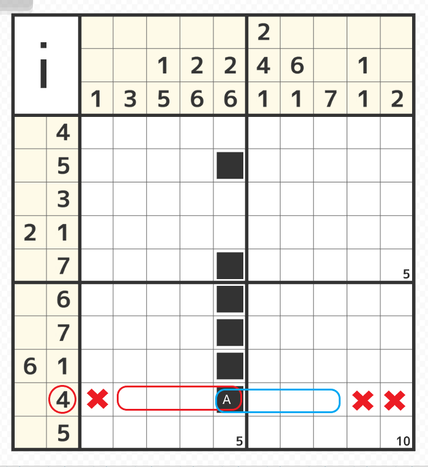
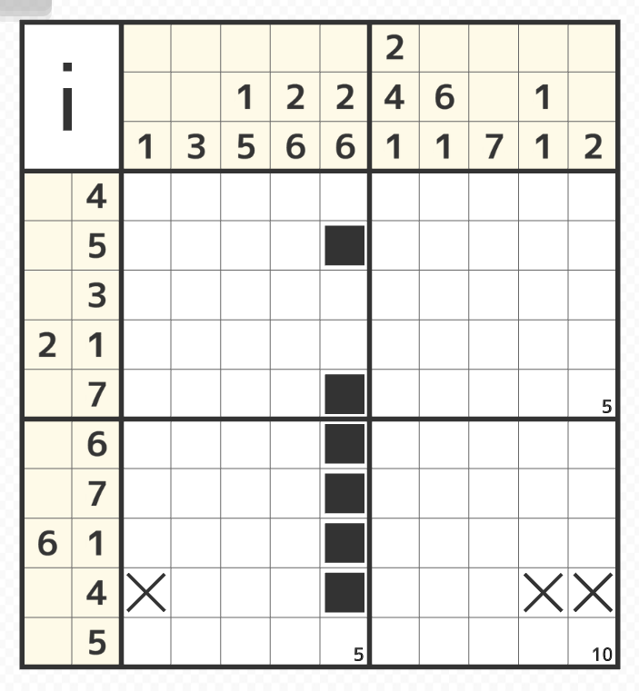
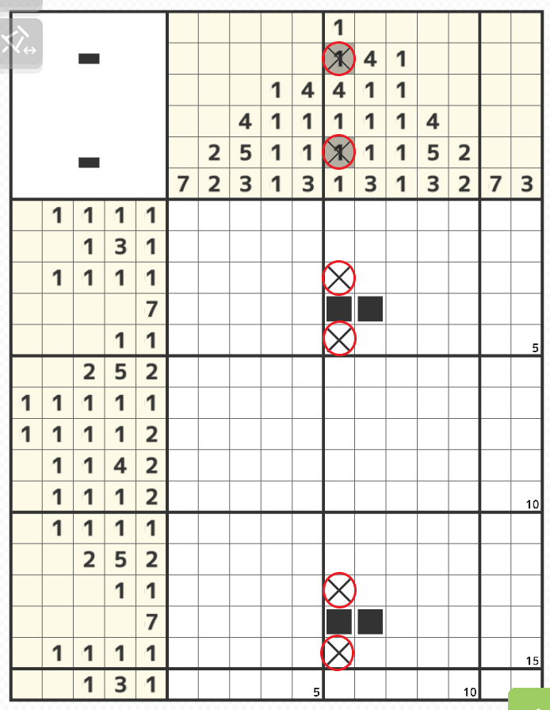

塗れない確定位置に✖を付ける

- 上図の9行目のように左から5マス目がすでに塗られている場合、9行目のヒントの数字は4のみのため、すでに塗られているマスから連なって一番左から塗りたくても赤線の範囲までとなり、逆に一番右に塗りたくても青線までの範囲となる
つまり×で書かれたところは空白が確定するので「×」をつけておくことができる。


- 上図は4行目と14行目に横に2マス塗られているが、6列目のヒントを良く見ると「1」のヒントのところに2箇所×がついている
（これは6列目の2箇所塗られたところがヒントの数字の2番目の「1」と5番目の「1」で確定している為）つまり6列目に塗った2箇所はどちらも1のため、その上下は必ず「×」が入る